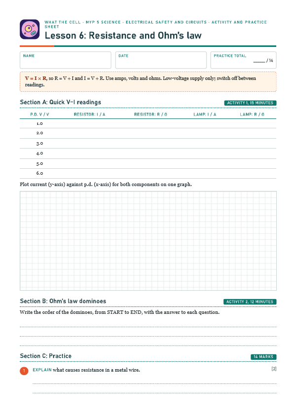

By the end of the lesson you can
- Explain what resistance is, in terms of electrons
- Use R = V / I and V = I × R
- Describe the current-p.d. graphs for a resistor and a lamp
- Explain why a lamp's resistance increases as it heats up
Keys: arrows or a presentation clicker move the slides, F for full screen. Slides with a red dot have a video or simulation.
Videos (all 5 minutes or less)
- 4:23
Circuits: p.d., current and resistance
Cognito. How p.d., current and resistance are linked, with V = IR. Slide 6.
- 4:11
Resistors
FuseSchool. What resistors do, the equation V = IR and variable resistors. Slide 9.
Simulations
- Lab
Circuit Practicals Lab: current and p.d.
What the Cell. Take readings for a resistor and a filament lamp, fill the table and watch both I-V graphs appear.
- PhET
Ohm's Law
PhET, University of Colorado Boulder. Change V and R with sliders and watch how the current responds.
Print and practise

Activity and practice sheet
Used in the lesson’s activities, with practice questions. Your teacher has the answers.
Download (PDF)Lesson 6 slides
All 22 slides in one file, to read again or print. The video buttons on the slides open YouTube.
Download the slides (PDF)Revising? The Revision tab on the unit page has the unit notes and review.
Notes: Resistance and Ohm's law
What is resistance?
Resistance opposes the current. In a metal, moving electrons collide with vibrating metal ions, which slows their flow and transfers energy as heat. Resistance is measured in ohms.
V = I × R
p.d. (V) = current (A) × resistance (ohms). So R = V / I and I = V / R. One ohm means one volt is needed for each amp.
Ohm's law
For a resistor or metal wire at constant temperature, the current is directly proportional to the p.d. The I-V graph is a straight line through the origin, and the component is called ohmic.
The filament lamp
The lamp's I-V graph curves and flattens. More current makes the filament hotter, its ions vibrate more, electrons collide more often and the resistance rises: about 8 Ω when dim, 20 Ω when bright.
Resistance at work
Heating elements in toasters, kettles and rice cookers have high resistance so they get hot. Variable resistors change the current, for example in dimmers and volume controls.
Safety link
Cables that carry big currents need a low resistance, or they heat up like a heating element and can start a fire.
Key words
| resistance (R) | how much a component opposes current; volts per amp |
|---|---|
| ohm | the unit of resistance: 1 volt per amp |
| V = I × R | p.d. (V) = current (A) × resistance (ohm) |
| resistor | a component with a fixed resistance |
| Ohm's law | I is proportional to V for a conductor at constant temperature |
| ohmic | obeys Ohm's law: straight-line I-V graph through the origin |
| variable resistor | a resistor whose resistance can be changed |